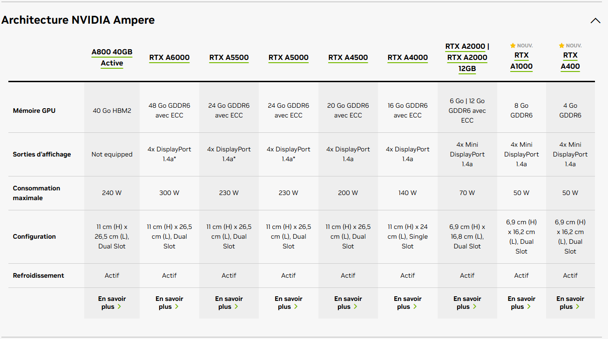
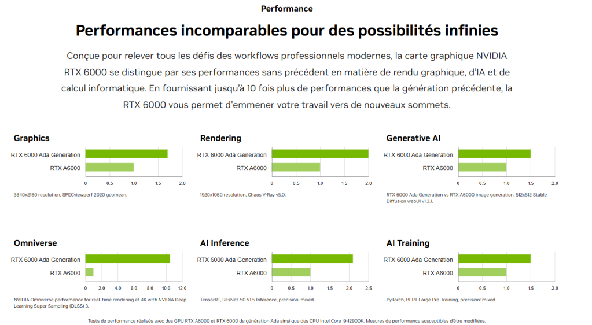
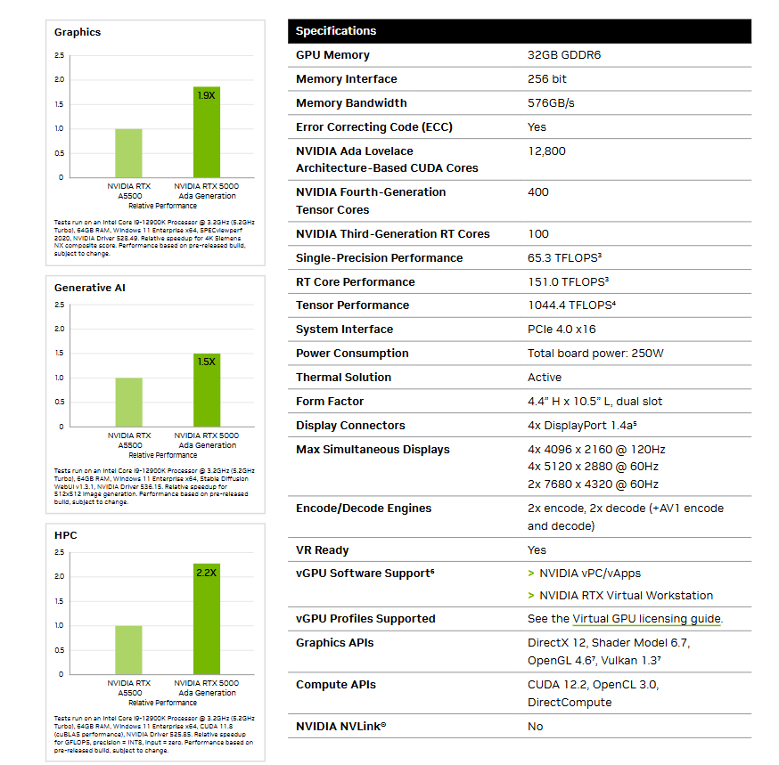
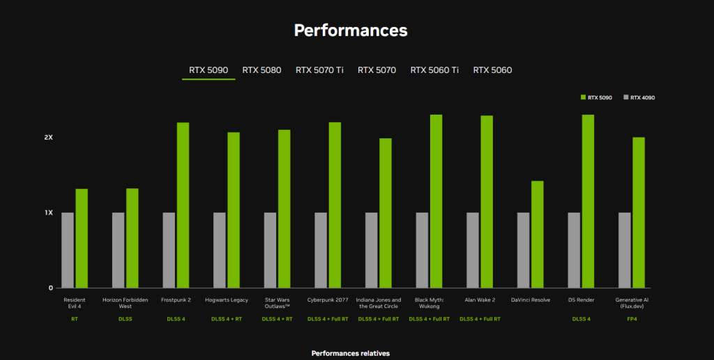
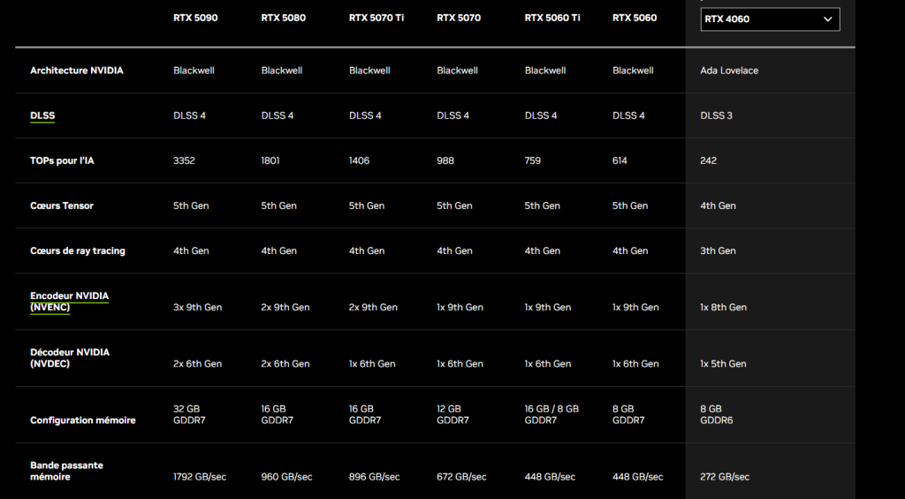

Veille technologique
Qu'est-ce que la veille technologique ?
La veille technologique consiste à s’informer de façon systématique sur les techniques les plus récentes et surtout sur leur évolution dans un secteur d’activité donné. Elle permet d’anticiper les évolutions, d’innover, de rester compétitif et de s’adapter aux changements rapides du monde numérique.
Pourquoi faire de la veille ?
- Anticiper les évolutions technologiques et les ruptures.
- Détecter de nouvelles opportunités ou menaces.
- Innover et rester compétitif.
- S’adapter aux besoins du marché et des clients.
Comment je réalise ma veille ?
J’utilise différents outils et sources d’information : sites spécialisés, newsletters, réseaux sociaux professionnels (LinkedIn), podcasts, conférences, et alertes Google. Je privilégie la régularité et la diversité des sources pour croiser les points de vue et repérer les tendances émergentes.
Ma veille technologique a débuté par l’analyse de la gamme NVIDIA Ampere, qui a marqué un tournant dans l’accélération matérielle pour l’IA et le calcul scientifique. Comprendre cette gamme permet de situer les bases de la révolution actuelle.

Avec l’arrivée de la génération Ada Lovelace, NVIDIA a repoussé les limites en matière de performances graphiques, de rendu et d’intelligence artificielle. La RTX 6000 Ada Generation illustre ce bond technologique.

Pour mieux comprendre l’impact de cette évolution, il est essentiel d’étudier les spécifications détaillées des cartes Ada Generation, qui intègrent des cœurs Tensor et RT de dernière génération, optimisés pour l’IA et le calcul parallèle.

L’évolution des performances ne se limite pas au monde professionnel : la série RTX 5000 apporte aussi des avancées majeures pour le grand public, notamment dans le gaming, la création et l’IA générative, comme le montre ce comparatif avec la RTX 4090.

Enfin, un tableau comparatif permet de visualiser l’ensemble des caractéristiques des dernières générations Blackwell et Ada Lovelace, pour mieux anticiper les tendances et les choix technologiques à venir.
